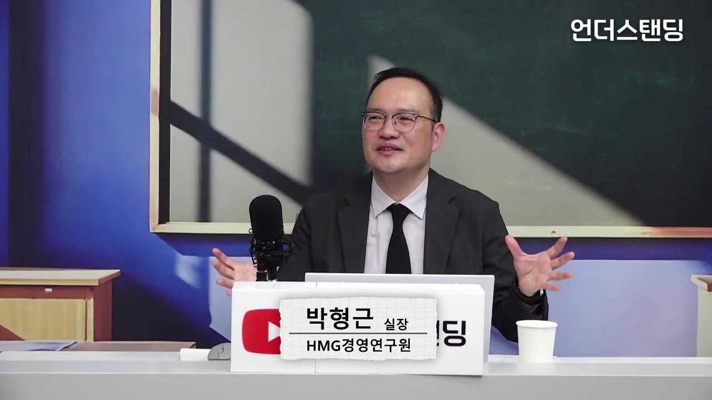
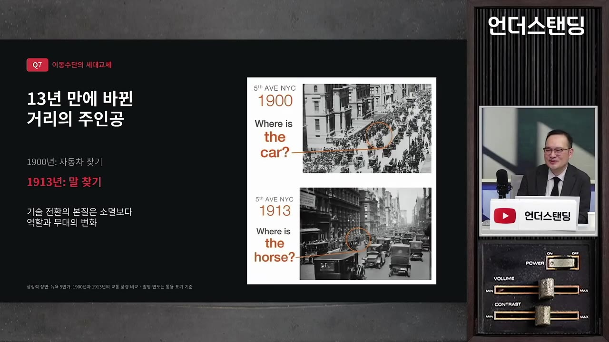
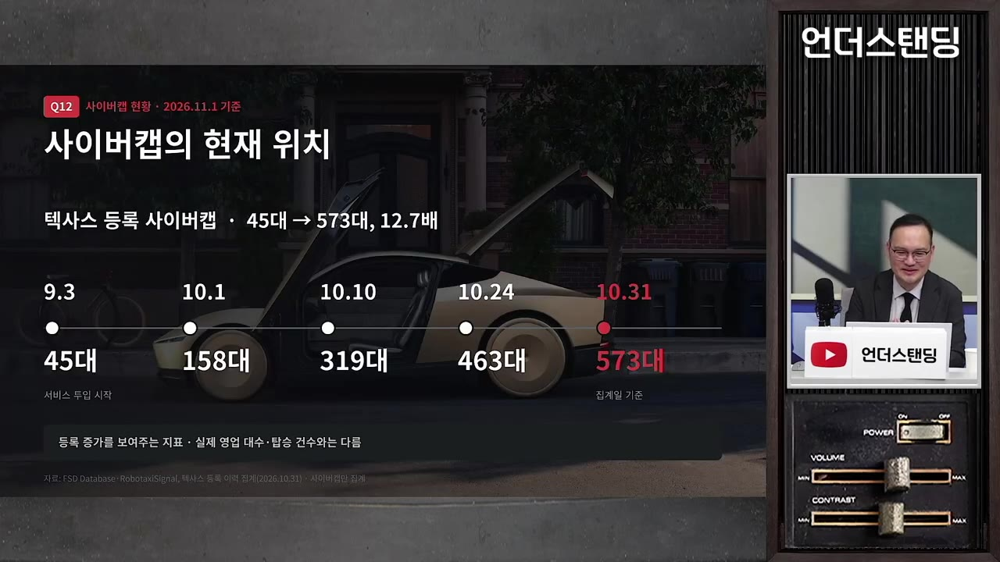

[박형근의 테슬라 2부] 10초면 차 한 대씩 찍어내는 무인택시 공장을 테슬라는 왜 놀리고 있을까? '사이버캡'의 미친 원가 비결 (HMG경영연구원 박형근 실장)
▶ 원본 영상 보기한눈에 보기
- 테슬라 사이버캡 공장은 최대 가동 시 10초에 한 대씩 찍어낼 수 있는데, 운행 허가가 난 곳이 없어 일주일에 몇 번만 돌리고 있다는 것이 영상의 핵심 관찰이다.
- 사이버캡은 차량 원가가 수억 원대인 웨이모보다 훨씬 싸고, 생산 단가 추정으로는 이미 택시·우버보다 운행 비용이 낮다는 분석이 있어 "돌릴 수만 있으면 바로 수익"이라는 주장이다.
- 로보택시는 자율주행 기술과 다른 생태계다. 문 닫기·청소·충전·관제·콜센터까지 사람 없이 돌려야 수익이 나며, 사이버캡은 처음부터 로봇 운영을 전제로 설계됐다.
- 로보택시(제한 구역·중앙 관제)와 일반 승용차 FSD(감독형)는 당분간 분리 운영될 것이며, 책임 문제 때문에 테슬라가 개인 차량까지 완전 무인을 허용하는 시점은 최소 몇 년 뒤로 본다.
- 가장 큰 걸림돌은 기술이 아니라 규제와 사회적 합의다. 현대차 연구원은 그래도 현대차에 기회가 있다고 보며, 머스크의 "꿈을 실행으로 연결하는 리더십"을 배울 점으로 꼽는다.
이런 분께 도움이 됩니다
- 테슬라 로보택시 사업이 왜 "기술은 됐는데 돈은 아직 못 버는 상태"인지 구조적으로 이해하고 싶은 투자자.
- 웨이모와 테슬라의 로보택시 경쟁 포인트(차량 원가, 운영 자동화, 데이터 격차)를 비교해 보고 싶은 분.
- 자동차·모빌리티 업계에서 자율주행 전환 속도를 가늠해야 하는 실무자.
핵심 내용
결론: 차와 공장은 준비됐고, 남은 것은 규제와 운영 자동화
- 발표자(HMG경영연구원 박형근 실장)는 테슬라가 사이버캡 생산 설비를 이미 다 갖춰 놓고 운행 허가를 기다리는 상태라고 본다. 규제가 풀리면 수십 개 도시로 한 번에 퍼질 수 있는 "허들을 조금씩 넘어가는 단계"다. (5:02, 6:10)

- 다만 공장을 놀리는 동안 손실이 쌓이므로, 테슬라가 규제 대기 구간을 얼마나 잘 버티느냐가 관건이라고 본다.
💡 테슬라의 로보택시는 기술 경쟁이 아니라 "규제가 풀리는 속도"와 "사람 없이 돌리는 운영 설계"의 경쟁이다.
자율주행 시대는 생각보다 빨리 올 수 있다
- 1900년 뉴욕 5번가 사진에는 자동차가 한 대 정도이고 나머지는 마차였는데, 불과 13년 뒤에는 거리가 자동차로 뒤덮였다. 자율주행도 10여 년 안에 스며들 수 있다는 비유다. (0:56)

- 운전이 취미인 사람도 있지만 상당수는 운전에 피로를 느끼므로, "운전이라는 노동에서 해방"이 테슬라와 자율주행 기업들의 명분이다.
- 머스크는 운전대가 달린 마지막 스포츠카가 로드스터가 될 거라는 주장을 하고 싶었을 것이고, 사이버캡이 수백 개 도시에서 수십만 대 돌아다니면 다음 소형차에 핸들을 달 이유를 되묻게 될 것이라고 발표자는 본다. (2:30)
- 발표자 자신도 "당장 온다는 뜻은 아니다"라고 전제를 깐다.
사이버캡의 원가·생산 능력
- 사이버캡은 운전대와 페달을 뺀 완전 무인 설계다. 언박스드 공정(차체를 큰 모듈로 나눠 동시에 조립하는 테슬라의 새 생산 방식)으로 최대 가동 시 10초당 한 대, 연간 수백만 대 생산이 가능하다. (5:02)
- 그런데 돌릴 곳이 없어 일부러 일주일에 몇 번만 가동한다. 제조업 기준으로 공장을 놀리는 기간은 수십억에서 수천억 원까지 손실이 날 수 있는 구간이다. (24:38)
- 웨이모는 차량 한 대가 수억 원을 호가해 운영비 부담이 크고, 우버보다 약 30% 프리미엄 요금을 받는데도 손실을 내고 있다는 설명이다.
- 사이버캡은 미래 생산 단가를 추정하면 이미 택시·우버(사람이 운전하는 호출 서비스)보다 싸다는 분석들이 나오고 있어, 자율주행이 완벽하게 되고 운행만 허용되면 바로 수익이 나는 사업이 된다는 주장이다. (7:09)
- 사이버캡이 어떻게 만들어지는지는 샌디 먼로(Munro & Associates)의 '사이버캡 딥다이브' 영상에 나온다고 소개한다.
💡 웨이모는 비싼 차를 비싸게 태워도 적자, 사이버캡은 싸게 만들어 우버보다 싸게 태워도 흑자라는 것이 발표자의 비교다.
로보택시는 자율주행 기술과 "전혀 다른 생태계"
- 자율주행 기술이 아무리 좋아도 로보택시 사업에는 기사가 하던 부수 서비스가 다 따라붙는다. 그래서 테슬라도 이 분야에서는 후발 주자이고, 운영 데이터가 전혀 없었다는 평가다. (18:11)
- 웨이모가 겪는 운영 문제:
- 기존 5세대 차량(재규어 I-PACE)은 수동문이어서 승객이 문을 안 닫고 내리면 닫아 줄 사람이 필요하고, 실제로 그 일에 돈을 쓴다. 그래서 자동 개폐가 되는 지커(Zeekr) 기반 차량으로 세대 교체 중이다.
- 기사가 없으니 커피·음식 자국 등 청소를 누군가 해야 한다.
- 자동 충전 설계가 안 돼 있어 사람이 충전해 줘야 한다.
- 관제 서비스와 콜센터도 운영해야 한다.
- 테슬라는 사이버캡 공개 행사 때부터 "모든 것을 로봇으로" 한다는 전제로 설계했다. (18:42)
- 자동문이라 문 열림 문제가 없고, 스테이션에 들어가면 문이 열려 청소 로봇이 자동으로 진입한다.
- 내장 소재는 물분사·물걸레 세척이 가능한 소재로 구성해 기계로 워싱할 수 있다.
- 충전은 지금은 사람이 꽂아 주지만, 궁극적으로 무선 충전이나 로봇 충전을 지향한다.
- 발표자는 "차량이 운행되는 동안 사람의 개입이 사실상 없게 설계하는 것"이 로보택시 사업의 승부처라고 본다. 웨이모도 그 자리에 머물지 않고 같은 설계를 준비하고 있다고 덧붙인다.
| 항목 | 웨이모 (현재 5세대 I-PACE) | 테슬라 사이버캡 |
|---|---|---|
| 차량 원가 | 수억 원대 | 훨씬 저가 (택시·우버보다 운행 단가 낮다는 분석) |
| 문 | 수동문, 안 닫으면 사람이 닫아야 함 (차세대는 자동) | 자동문 |
| 청소 | 사람이 청소 | 청소 로봇 진입, 물세척 가능 소재 |
| 충전 | 사람이 충전 | 지금은 사람, 목표는 무선·로봇 충전 |
| 운영 데이터 | 많음 (11개 도시 확장 중) | 적음, 후발 |
운영 현황과 데이터 격차
- 테슬라 로보택시 무인 운영은 출범 당시 약 20대 테스트에서 45대로 시작해 지금 400대를 막 넘어가고 있다. 사이버캡 외에 모델 Y 형태의 로보택시를 포함해 실제 운영 대수는 200~300대 수준이라는 설명이다(동시 운영 비율 숫자는 자막상 불분명). (20:14)

- 오스틴에서는 운전대 없는 금빛 사이버캡이 "발에 치이듯" 많이 보인다고 전한다.
- 호출 방식은 카카오택시처럼 앱으로 부르면 가까운 차가 오지만, 아직 픽업·드롭 구간을 안전이 확보된 곳으로 제한한다. 웨이모도 비슷하며, 킥보드 반납 존처럼 안전 설계를 둔 것으로 보면 된다. 중국 선전의 포니(Pony.ai)는 아무 데서나 세워 줬다는 진행자 경험도 나온다. (21:16)
- 웨이모의 수치: 등록 대수 약 3,000대, 주간 호출 50만 회, 연말에는 주간 100만 회 전망. 발표자는 여기서 쌓이는 픽업·드롭 데이터가 테슬라와의 격차라고 본다.
- 다만 테슬라는 차량 공급 능력이 웨이모보다 훨씬 크므로, 규제만 합의되면 데이터를 매우 빠르게 쌓을 수 있다는 전망이다. (23:36)
로보택시와 일반 승용차 FSD는 당분간 분리된다
- 주행 기술 자체는 로보택시와 일반 테슬라 차가 같다. 사이버캡의 FSD 하드웨어가 조금 더 고사양이지만, 하드웨어 4 기준 모델 Y·모델 3에 수평 전이가 가능하다. 모델 Y도 핸들과 페달이 달린 채로 이미 수백 대가 무인 주행을 시작했다. (8:06, 10:32)
- 그런데도 일반 승용차는 "감독형"으로 남는다. 차이는 책임과 예외 상황 대응이다.
- 로보택시는 제한 구역, 400~500대 규모라 중앙 관제 요원이 모니터하다가 위험하면 버튼을 눌러 멈추거나, 엉뚱한 곳에 세워진 승객의 전화를 받는 등 돌발 상황을 처리한다. 탑승자는 비감독이지만 뒷단은 감독 중인 구조다.
- 바이두(Baidu)는 차량 10대당 모니터 요원 1명 수준까지 내려오면 수익이 난다고 말한다.
- 일반 승용차는 전 세계 약 700만 대, 미국만 180만 대(자막상 FSD 장착 여부 불분명)가 풀려 있어 어디서 사고가 날지 예측할 수 없고, 사고 책임을 테슬라가 져야 한다.
- 테슬라가 지금 책임을 떠안을 이유도 없다. 책임을 지지 않아도 소비자가 FSD를 구독하고 있어 매출은 이미 발생한다.
- 미국 구매자 중 FSD 구독 비중은 작년 약 12%, 올해 초 50% 초과, 최근 달에는 70%까지 올라갔다는 수치다. (9:02)
- 사이버캡이 수십만 대 풀려 데이터가 충분히 쌓이면 테슬라가 "사고 책임을 지겠다"고 선언하는 시점이 올 수 있지만, 발표자는 최소 몇 년은 걸릴 것으로 보수적으로 본다.
| 구분 | 로보택시 (사이버캡·모델 Y) | 일반 소유 차량 FSD |
|---|---|---|
| 운행 구역 | 제한 구역 | 어디든 |
| 감독 | 탑승자 비감독, 중앙 관제 요원 모니터 | 운전자가 감독, 개입 준비 필수 |
| 사고 책임 | 테슬라 통제하 | 테슬라가 지려면 선언 필요, 현재 미실시 |
| 수익 모델 | 호출 요금 | FSD 구독 (이미 매출 발생) |
🔁 발표자가 보는 완전 무인 확산 단계
- 제한 구역 로보택시
- 규제기관 검토 통과
- 수십만 대 운행·데이터 축적
- 책임 선언·일반 차 전이
- 다음 차에 핸들 삭제
- 1제한 구역 로보택시
오스틴 등에서 수백 대를 중앙 관제하며 운영, 사고 한 건에도 사업이 닫힐 수 있어 천천히 확대
- 2규제기관 검토 통과
미국은 제조사 자가 승인 체제지만 중앙 규제기관 검토 중, 넘으면 수십 개 도시로 확산
- 3수십만 대 운행·데이터 축적
공장은 이미 준비돼 있어 허가만 나면 빠르게 늘릴 수 있음
- 4책임 선언·일반 차 전이
데이터 자신감이 생기면 테슬라가 사고 책임을 선언하고 HW4 모델 Y·3에 비감독 FSD 적용
- 5다음 차에 핸들 삭제
소형차 설계에서 운전대를 달 이유를 되묻는 단계
규제와 사회적 합의가 진짜 허들
- 미국은 형식 승인을 제조사가 스스로 하는 자가 검증 체계라 테슬라가 풀려면 지금도 크게 풀 수 있지만, 사고 한 건이 커지면 사업 자체를 접어야 할 수 있어 규제기관 눈치를 보며 천천히 푼다. (4:33)
- 한국은 타다 사례처럼 국내 산업 보호와 사회적 합의 문제여서 무작정 허용되기 어렵다. 다만 "테슬라 FSD 왜 안 풀어 주냐"는 여론처럼, 해외에서 로보택시를 타 본 사람이 늘면 "우리도 하자"는 합의가 형성되는 순간 넘어갈 것으로 본다. (14:57)
- 유럽 규제기관도 다수 개인 소유 차량에 한 번에 자율주행을 부여하는 것은 허용이 쉽지 않다.
- 진행자는 결국 "로비가 얼마나 빨리 먹히느냐"에 달릴 수 있다고 정리한다.
현대차 연구원의 시각: 기회는 있고, 배울 것은 리더십
- 현대차에도 여전히 기회가 있다고 발표자는 본다.
- 10여 년 테슬라를 공부하며 느낀 것은 머스크가 "상상도 할 수 없는 일을 꿈꾸고 직원에게 전파하고 실행해 내는" 점에서 정주영 회장 등 선대 회장들과 기본 정신이 같다는 것이다. 스케일만 국가 차원에서 우주 차원으로 달라졌다. (26:15)
- 같은 장면을 보고 "대단하다"고 느끼는 사람과 "저걸 어디에 쓰나" 하는 사람의 차이가 기업 경쟁력 차이로 이어진다고 본다.
- 현대차 경영진 피드백도 "리더십이 실행으로 연결되는 모습"에서 교훈을 얻었다는 쪽이 많았다고 전한다. 로드스터 같은 결정은 회의로 도출될 결론이 아니라 톱 리더가 직접 밀어야 나온다는 것이다. (27:44)
💡 "일론 머스크에서 정주영의 유전자가 보인다" — 지금 우리 기업에 필요한 정신이라는 발표자의 결론.
기억할 숫자·인용
- 사이버캡 최대 생산 속도: 10초당 1대, 연 수백만 대. 현재 가동은 일주일에 몇 번.
- 공장을 놀리는 구간의 손실: 제조업 기준 수십억~수천억 원.
- 웨이모: 차량 한 대 수억 원, 우버 대비 약 30% 프리미엄 요금에도 손실. 등록 약 3,000대, 주간 호출 50만 회, 연말 100만 회 전망, 11개 도시 확장 중.
- 테슬라 로보택시 무인 운영: 약 20대 테스트 → 45대 → 400대 돌파.
- 미국 테슬라 구매자 FSD 구독 비중: 작년 약 12% → 올해 초 50% 초과 → 최근 70%.
- 테슬라 차량 보급: 전 세계 약 700만 대, 미국 약 180만 대.
- 바이두 기준 수익 분기점: 차량 10대당 관제 요원 1명.
- 마차→자동차 전환: 1900년 뉴욕 5번가 자동차 1대 → 13년 뒤 전부 자동차.
- "돌릴 수만 있으면 얘는 바로 수익이 나는 사업이 되는 거예요."
- "로보택시 사업은 전혀 다른 생태계인 겁니다."
생각해볼 점
- 영상의 "사이버캡은 이미 우버보다 싸다"는 미래 생산 단가 추정에 근거한 분석이라고 발표자 스스로 밝힌다. 실제 운영비(관제 인력·보험·사고 비용)가 포함된 숫자인지는 영상에 나오지 않으므로 투자 판단에 그대로 쓰기는 어렵다.
- 발표자는 현대차 계열 연구원이고 "경쟁사지만 걱정 아닌 걱정"이라 말한다. 테슬라를 높게 평가하되 규제 허들과 운영 데이터 격차를 강조하는 균형은 참고하되, 현대차 쪽 시각이라는 점은 감안할 필요가 있다.
- 로보택시 운영 대수와 비율 숫자가 자막에서 일부 뭉개져 있다(400대 돌파 vs 200~300대 운영). 정확한 수치는 테슬라 공식 발표를 확인하는 것이 안전하다.
바로 해볼 일
- Munro & Associates의 '사이버캡 딥다이브' 영상을 찾아 언박스드 공정과 세척 가능 내장 설계를 직접 확인하기.
- 테슬라 로보택시(오스틴)와 웨이모 운영 대수·호출 수의 최신 공식 수치를 찾아 영상 숫자와 비교하기.
- 테슬라 투자나 산업 분석을 한다면 "기술"이 아니라 "규제 통과 시점"과 "운영 자동화 진척"을 체크 항목으로 추가하기.